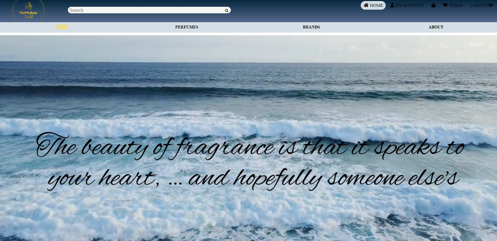
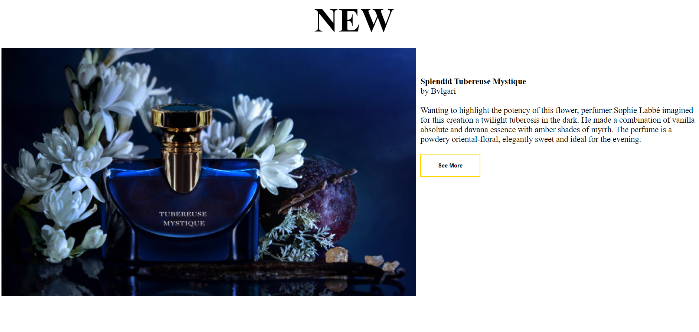
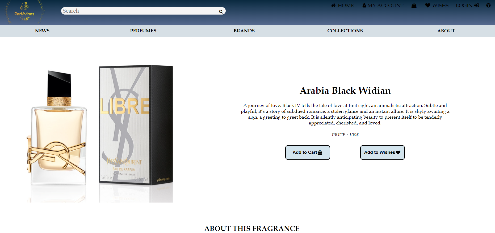
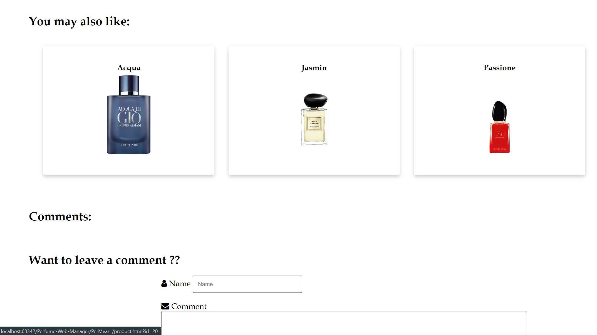
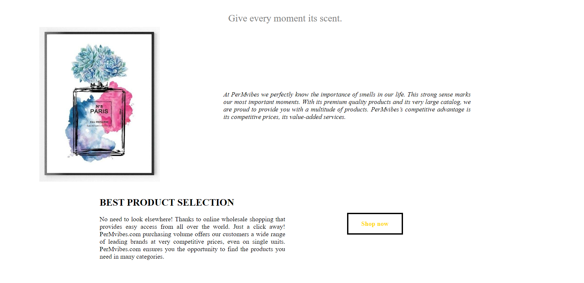
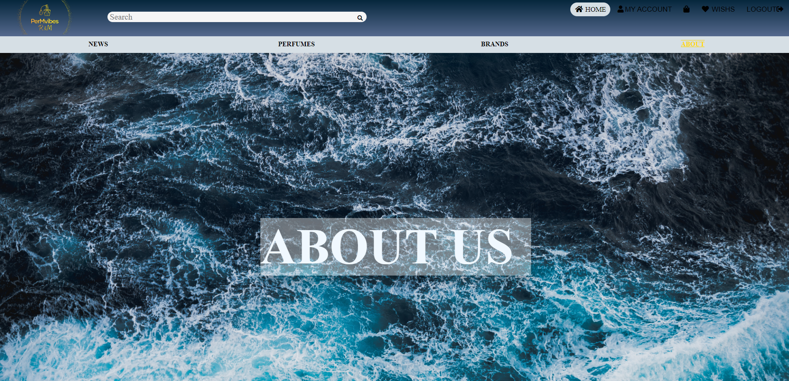
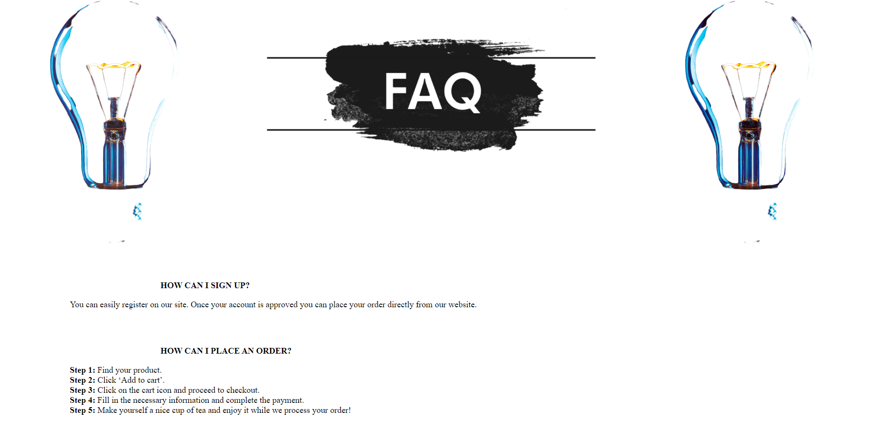
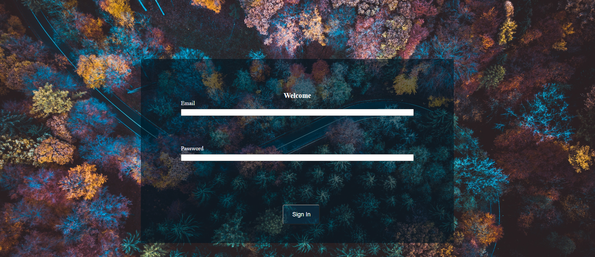

Introducere
Țel
PerMvibes este o aplicație web prin intermediul căreia se pot vizualiza și cumpăra diferite parfumuri. Produsele pot fi vizualizate atât de utilizatorii autentificați, cât și de cei care nu doresc să-și creeze un cont.
Convenții
Aplicația dorește să minimizeze efortul utlizatorului de a accesa produsele de interes. Astfel, pe pagina principală, utlizatorul găsește top 3 parfumuri ale ultimelor colectii, având posibilitatea de a accesa oricare dintre el. De asemenea, în cadrul paginei de descriere a unui produs, utilizatorul găsește informații detaliate referitoare la prețul, valabilitatea stocului, ingredientele sale componente, aspecte legate de colecția din care face parte cât și sugestia a altor 3 produse cu care se găsesc aspecte comune.
Public țintă
Acest document este destinat utilizatorului, întrucât cuprinde aspecte referitoare la principalele funcționalități ale aplicației și la maniera de interacțiune cu interfața pentru utilizator, pentru a ușura utilizarea aplicației.
Scopul produsului
Produsul are scopul de a furniza un mediu facil și plăcut, în care utilizatorul se poate informa despre parfumurile dorite, ingredientele sale cât și despre povestea colecților din care fac parte. Site-ul urmărește atât componenta funcțională cât și cea a interfeței, oferind utilizatorului o experiență cât mai plăcută de navigare.
Referinţe
Pentru a crea un site cu o interfață cât mai utilă pentru utilizator, am documentat căteva site-uri utile a căror link se regăsește mai jos.
Descriere generală
Perspectiva produsului
PerMvibes este un site de parfumuri online care acceptă o serie de funcții pentru clientul care este ori logat, ori un simplu vizitator. Făcând o comparație cu un alt astfel de provider (i.e. Sephora), PerMvibes devine o opțiune viabilă când vine vorba de cumpararea unui parfum, oferind utilizatorului o viziune mai larga asupra diferitelor tipuri de parfumuri .
Funcționalitățile produsului
Categorii de utilizatori
Aplicația este destinată, în principal, utilizatorilor care doresc sa achizitioneze un parfum sau oricarei persoane ce are acces la Internet și un browser web. Se presupune că utilizatorul este suficient de familiarizat cu un computer pentru a opera browserul, tastatura și mouse-ul și este capabil să navigheze către, de la și în interiorul site-urilor web simple
Mediu de operare
Fiind o aplicatie Web, PerMvibes este scalabilă in orice browser ce rulează HTML, CSS, neținând cont de o versiune anume a sistemului de operare a device-ului pe care rulează aplicația.
Design și constrângeri de implementare
Documentație pentru utilizator
Secțiunea "FAQ" a site-ului este gânditată pentru a răspunde utilizatorului la cele mai frecvente întrebări pe care acesta le poate avea în ceeea ce privește interacțiunea cu aplicația. Întrebările din secțiune sunt selectate dintre intrebările frecvente ale utilizatorilor, iar modalitatea lor de afișare oferă utilizatorului o navigare rapidă și o identificare exactă a soluțiilor la majoritatea problemelor sau neclarităților pe care le poate avea în ceea ce privește interacțiunea cu site-ul.
Cerințe externe
Interfață utilizator
PerMvibes poate fi folosita atat pe ecrane mari cat si pe browserul telefonului al carui ecran este de dimensiuni mai reduse, iar datorita design-ului responsive calitatea interfaței nu este afectată. Tematica site-ului este una cât mai naturală, în note de albastru și gold, încercând să ofere un sentiment însuflețit, plin de viață și energie, dinamic, intens și puternic.
Interfața aplicației este simplă. Pentru a creea layout-ul, fiecare pagină s-a structurat folosind flex, deoarece este util în amplasarea elementelor în pagină.
Bara dublă de navigare este un element din interfață care este comun tuturor paginilor din aplicație. Prima bară conține logo-ul aplicației, urmat de bara de căutare care va interoga baza de date și un meniu minimalist în partea dreaptă care conține butonul pentru pagina principala , pagina contului , a coșului de cumpărături, a listei cu produse favorite, pagina de LOGIN si HELP, reprezentate și de icon-uri specifice. Dacă site-ul este accesat de pe browserul unui device care are dimenisuni mai mici de 650px meniul se ascunde după un buton poziționat în partea dreaptă a bării. Acesta este afișat, la apăsarea butonului, vertical în partea stângă peste elementele din pagină, folosind un font de 10px. Iar bara de căutare și logo-ul se redimensionează
Pagina principala
 Pagina unui produs
 Pagina de About
 Pagina de Help
Pagina de Login
Interfață software
Aplicația va dispune de o conectare la o bază de date relațională: MySQL, pentru a realiza anumie acțiuni ale utilizatorului ( înregistrare, autentificare) și pentru gestionarea produselor.
Interfață de comunicare
Cerințe funcționale
Înregistrare
Autentificare
Utilizatorii care dețin un cont se pot autentifica pe pagina de "login" în care trebuie să-și introducă numele de utilizator(sau adresa de email) și parola.
Cerințe nonfuncționale
Cerințe de siguranță
Cerințe de securitate